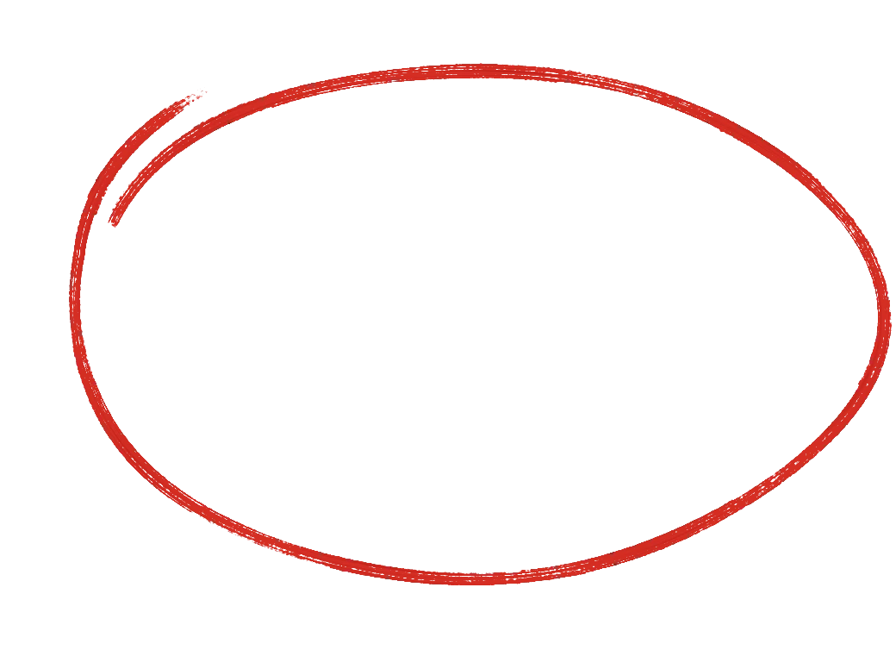
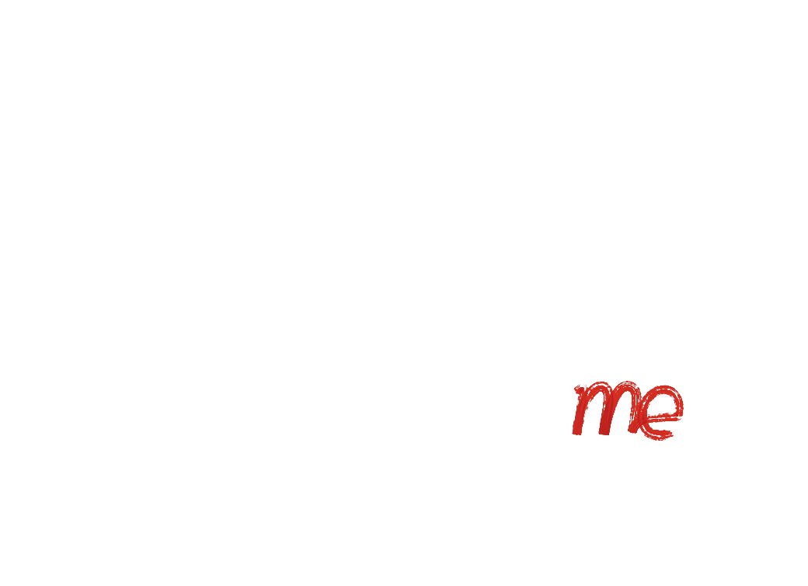
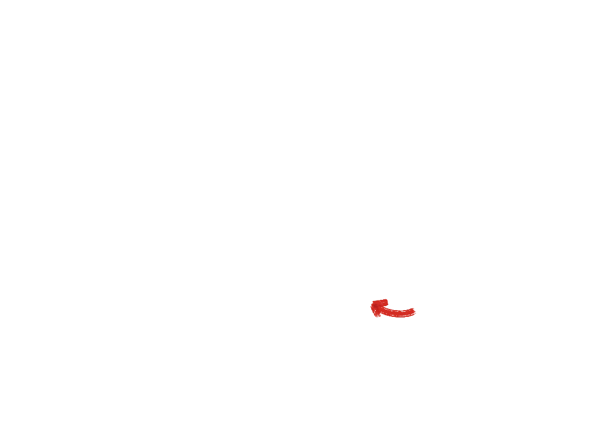
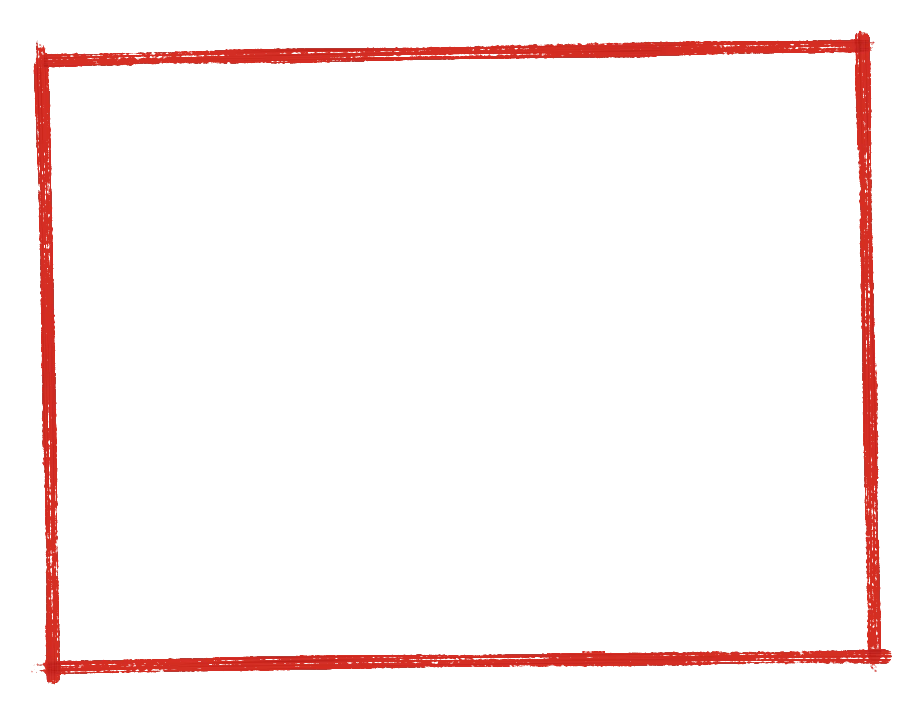

hey, i'm gabe. i'm 23, i live in san francisco, and i'm the cto of nero. this is a proof sheet of ten of my photos. everything else is printed underneath.
10 frames, in file orderhover a frame for the loupe, click to enlargepress and hold a frame for the loupe, tap to enlarge
R000006501
R000006702
R000007903
R000926604
R000930105



R000930706
R000931907
R000932608
R000933109

R000933910
work print of the boxed frameR0009339
nowsince spring 2025
cto of nero. we're helping artists make money and go viral on livestreams.
i built nero.fan and scaled it to 600K+ monthly users. it processes $500K+ GMV a month(numbers as of early 2026).